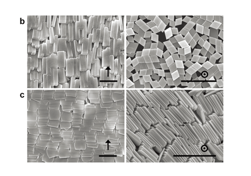

연구성과 10선
연구성과 10선
KAIST RESEARCH ACHIEVEMENTS
펩타이드로 만든 나침반
화학과 이희승
요약
외부 자극을 이용하여 거시적인 역학적 움직임을 제어할 수 있는 분자의 개발은 합성화학 및 나노소재 등 다양한 분야에서 크게 주목받고 있는 도전적 과제 중 하나이다. 펩타이드와 같은 반자성(diamagnetic) 특성을 갖는 유기분자들은 금속성 물질들에 비해 자기민감성(magnetic susceptibility)이 현저히 낮아 수 테슬라(Tesla) 이상의 매우 강한 자기장 하에서도 반응하지 않아서 비자성(non magnetic) 물질로 취급되어 왔으며, 반자성 물질의 움직임을 실시간으로 제어하는 것은 불가능한 것으로 여겨졌다. 본 연구에서는 독창적으로 개발한 폴덱쳐(foldecture)라는 나선형 펩타이드 자기조립체를 이용하여 최초로 순수 유기화합물로 구성된 펩타이드 자기나침반 개발에 성공하였으며, MRI 장비의 자기장 세기보다 적은 1 테슬라 이하의 회전자기장에서도 폴덱쳐들이 실시간으로 감응하여 정렬하며 수용액상에서 실시간 회전운동도 가능함을 최초로 증명했다. 본 연구결과는 반자성 물질 연구에 관한 새로운 시각을 제시한 것이며, 생체친화적 유기나노물질 개발에 혁신적인 시작점을 제공할 것으로 기대된다.
연구내용
외부 자극에 감응하여 거시적인 역학적 움직임이 제어되는 물질의 개발은 합성화학 및 나노소재 등 다양한 분야에서 크게 주목받고 있다. 대부분의 기존 연구에서는 외부 자극으로서 빛이나 열 등을 사용해왔으나, 자기력은 비침입성(noninvasive) 자극이라는 월등한 장점을 갖고 있음에도 불구하고 상대적으로 큰 관심을 받지 못했다. 금속화합물이나 산화금속 등과 같은 강자성(ferromagnetic) 및 상자성(paramagnetic) 특성을 갖는 자성물질들은 이들의 자기적 특성을 이용하여 다양 하게 응용되고 있지만, 펩타이드와 같은 반자성(diamagnetic) 특성을 갖는 유기분자들은 금속성 물질에 비해 자기민감성(magnetic susceptibility)이 현저히 낮아 수십 테슬라(Tesla) 이상의 매우 강한 자기장 하에서도 반응하지 않아서 비자성(non-magnetic) 물질로 취급되어 왔다.
그 이유는 분자 오비탈에 홀전자가 없는 대부분의 반자성 유기분자는 반자기 민감성(diamagnetic susceptibility)이 무시할 수 있을 정도로 매우 작아서 열에너지에 의한 무작위 브라운 운동을 극복하지 못하기 때문이다. 따라서, 그동안 이러한 근본적인 문제를 해결할 수 있는 방법이 없었기 때문에 반자성 물질의 움직임을 실시간으로 제어하는 것은 불가능한 것으로 여겨졌다. 그러나, 이론적으로는 반자성 분자일지 라도 열에너지를 극복할 수 있을 만큼의 다수의 분자가 일정한 규칙으로 정렬된 집합체가 된다면 반자성 정렬(diamagne-tic alignment)이 가능하게 되므로 외부 자기장의 변화에 실시간으로 감응하는 분자기계의 개발 및 다양한 응용이 가능할 것으로 예상되지만 이를 실험적으로 증명한 예는 없었다.
 그림 1. (a) 광학현미경을 통해 관찰된 회전자기 장하에서 폴덱쳐의 실시간,
그림 1. (a) 광학현미경을 통해 관찰된 회전자기 장하에서 폴덱쳐의 실시간,
용액상 자기 정렬 현상. (b) 주자성 박테리아의 투과전자 현미경 사진.
(c) 주자성 박테리아를 모방한 하이드로겔 나침반의 모식도 (d) 회전자기 장하에서
수 밀리미터 크기의 유기물 자기 나침반의 실시간 자기정렬 현상
본 연구에서는 최초로 순수 유기화합물로 구성된 펩타이드를 이용하여 금속물질만으로만 가능했던 자기 나침반을 개발했다. 본 연구팀이 독창적으로 개발하여 폴덱쳐(foldecture)라고 명명한 나선형 펩타이드 분자의 자기조립체는 독특한 3차원 모양의 일정한 크기를 갖는 비금속 유기물질이며 반자성 특성을 갖지만 이를 구성하는 펩타이드 분자들이 높은 결정성과 일정한 규칙성을 갖도록 설계된 구조적 특성 때문에 외부 자기장 방향을 따라 한 방향으로 정렬됨을 관찰하였다. 또한, MRI 장비의 자기장 세기보다 적은 1 테슬라 이하의 회전자기장에서도 폴덱쳐들이 실시간으로 감응하여 정렬하며, 수용액상에서 실시간 회전운동도 가능함을 최초로 규명함으로써 오래된 과제의 해결책을 제시하였다. 폴덱쳐가 상대적으로 약한 자기장에 반응해 정렬할 수 있는 이유는, 무시할 정도로 작은 반자기 이방성을 갖는 펩타이드 분자라 할지라도 폴덱쳐라는 3차원 마이크로구조체를 형성함으로써 열에너지를 극복할 수 있을 정도로 증폭되기 때문이다. 또한, 연구팀은 체내에 마그네토좀이라 불리는 자기나침반을 지닌 주자성 박테리아(magnetotactic bacteria)의 행동양식에 착안하여, 막대기 모양의 폴덱쳐가 나침반처럼 실시간으로 자기장의 방향을 따라 정렬하는 현상을 가시화할 수 있는 하이드로겔 자기나침반을 구현하는데 성공했으며, 약 3밀리미터의 크기를 갖는 이 나침반은 30rpm 이상의 회전성 자기장을 가리킬 수 있다. 본 연구결과는 폴덱쳐라는 3차원 유기분자구조체를 이용하여 분자의 미세한 반자기 특성을 거시적 운동으로까지 변화시킬 수 있다는 새로운 개념을 제시하고 이를 실험적으로 입증한 주목할 만한 성과이다. 그동안 크게 주목받지 못하던 자기장을 외부 자극으로 이용한 분자기계 개발의 새로운 설계원리를 제시한 예로서, 폴대머 및 분자기계 연구를 포함한 다양한 관련분야에 큰 파급효과를 불러일으킬 것으로 예상된다. 향후 보다 민감하고 정교한 움직임 제어에 관한 후속연구가 수반된다면, 생체에 응용 가능한 나노, 마이크로머신으로서의 초분자 시스템 개발의 초석이 될 것이다.
본 연구에서 밝혀진 펩타이드 자기조립체의 반자성 정렬 현상은 반자성 물질 연구에 관한 새로운 시각을 제시한 것으로 평가되며, 폴대머 및 펩타이드 자기조립 연구를 포함한 기초과학 연구뿐만 아니라 자극반응성 분자기계, 유기나노물질의 움직임 제어 등 다양한 관련 응용연구 분야에 파급효과가 클 것으로 기대된다. 향후 회전운동을 넘어서 보다 민감하고 정교한 움직임 제어에 관한 후속연구를 통해, 생체 친화적 초분자 시스템응용의 획기적인 전기를 마련하게 될 것이다.
 그림 2. 정적자기장하에서 폴덱쳐의 자기정렬 실험모식도
그림 2. 정적자기장하에서 폴덱쳐의 자기정렬 실험모식도
 그림 3. 주사전자현미경을 통해 관찰된 폴덱쳐의 자기정렬 현상
연구비지원
ㆍ삼성미래기술육성 재단(SSTF-BA1301-08)
연구실적
ㆍ논문 : Magnetotactic Molecular Architectures from Self-Assembly of β-Peptide Foldamers, Nature Communications, 6:8747(2015)
ㆍ국내특허 10-2015-0188482, 주자성의 펩타이드 자기조립 집합체 및 이의 제조방법